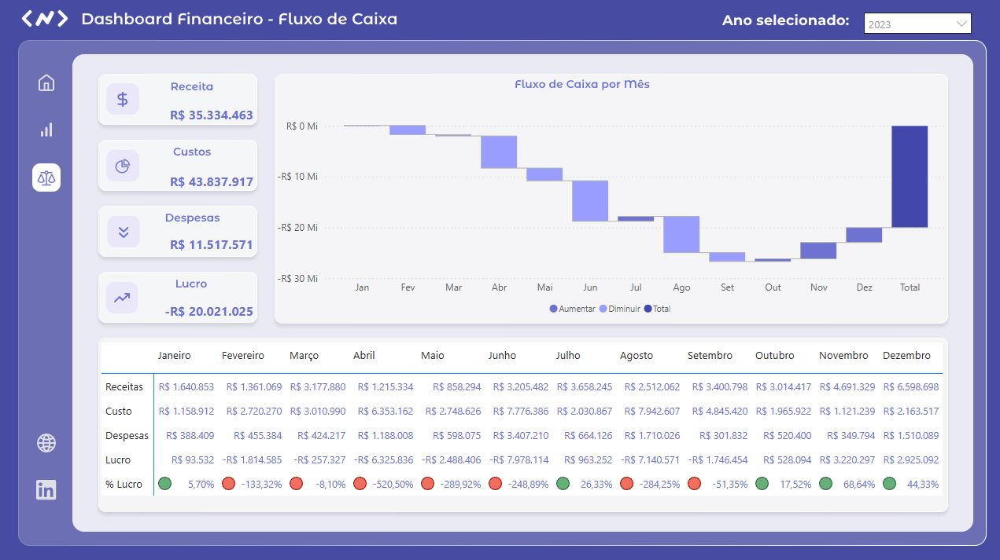
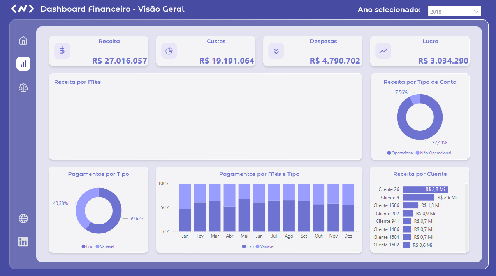

O que é o Projeto
Este projeto é um dashboard financeiro empresarial desenvolvido no Power BI que consolida e analisa receitas e despesas de uma empresa ao longo de 8 anos completos, de 2017 a 2024.
O principal objetivo foi centralizar dados financeiros dispersos em mais de 100 arquivos Excel em um único painel interativo. O projeto cobre todo o processo de ETL · extração, transformação e carga dos dados · passando pela modelagem dimensional no Power Query até a criação de indicadores financeiros com DAX.
O resultado é um painel que permite ao gestor acompanhar receitas, custos operacionais, despesas e resultado líquido por período, categoria contábil, cliente e estado (UF), com navegação temporal dinâmica e filtros cruzados entre os visuais.
Consolidados
Analisados
Contábeis
Estrutura dos Arquivos Excel
Os dados financeiros estavam fragmentados em dois grandes grupos de arquivos, organizados de formas distintas — o que tornava a consolidação manual inviável e propensa a erros.
Pagamentos (8 arquivos anuais): um arquivo por ano
(Pagamentos_2017.xlsx … Pagamentos_2024.xlsx). Cada arquivo contém
os valores mensais de saída organizados por ID de conta contábil · custos fixos, variáveis,
despesas operacionais e não operacionais · com totais anuais por categoria.
Recebimentos (96 arquivos mensais): organizados em pastas anuais
(2017 a 2024), com um arquivo por mês dentro de cada pasta
(01_Recebimentos_2017.xlsx … 12_Recebimentos_2024.xlsx). Cada
arquivo registra as transações individuais de entrada com data, cliente, estado (UF),
ID do plano de contas e valor recebido.
Cadastro do Plano de Contas: tabela de dimensão central
(CadastroPlanoContas.xlsx) que classifica cada conta por movimento
(entrada/saída), lançamento, conta contábil e tipo · funcionando como chave de
relacionamento entre as tabelas fato.
Consolidar ~96 arquivos de recebimentos mensais com Power Query · usando a funcionalidade de importação por pasta · eliminou completamente o trabalho manual de copiar e colar planilhas.
ETL e Modelo Relacional
Com os dados brutos identificados, o trabalho central do projeto foi construir um modelo dimensional funcional no Power BI, seguindo o padrão estrela (star schema) para garantir desempenho nas consultas e clareza no relacionamento entre as tabelas.
Power Query · Transformação e Consolidação
O Power Query foi utilizado para automatizar a leitura de todos os arquivos de uma só vez, sem necessidade de importar cada planilha manualmente. Para os recebimentos, a função de importação por pasta percorre automaticamente todos os subdiretórios e arquivos, empilhando os registros em uma única tabela fato consolidada. Para os pagamentos, o mesmo processo foi aplicado aos 8 arquivos anuais, normalizando as colunas mensais para o formato linha-a-linha.
Tabelas do Modelo
- Fato Recebimentos: granularidade por transação · data, cliente, UF, ID de conta e valor recebido. Origem: ~96 arquivos mensais.
- Fato Pagamentos: granularidade mensal por conta contábil · ID de conta e valores de jan a dez. Origem: 8 arquivos anuais.
- Dimensão Plano de Contas: classificação de cada conta por movimento, lançamento, tipo e nome. Chave de relacionamento central do modelo.
- Tabela Calendário (DAX): gerada via DAX para permitir análises de inteligência de tempo — comparações mês a mês (MoM) e ano a ano (YoY).
Indicadores e Análises Disponíveis
Com o modelo relacional estruturado, as medidas DAX foram criadas para calcular os principais indicadores financeiros do negócio, todos dinâmicos e responsivos aos filtros do painel.
Principais KPIs
- Receita Total por período · mês, trimestre e ano.
- Total de Pagamentos (custos e despesas) segmentado por categoria contábil (fixo, variável, operacional, não operacional).
- Resultado Operacional · Receita menos Custos, com variação percentual em relação ao período anterior.
- Receita por Estado (UF) · análise geográfica da distribuição de clientes no território nacional.
- Receita por Cliente · identificação dos maiores contribuintes de receita ao longo do período.
- Evolução Mensal e Anual · gráfico de tendência cobrindo os 8 anos completos de dados.


O que aprendi com este projeto
Este projeto deixou claro que a maior parte do trabalho em Business Intelligence não está na criação dos visuais, mas sim na preparação e modelagem dos dados. Lidar com mais de 100 arquivos organizados de formas diferentes exigiu entender profundamente o Power Query para automatizar transformações que seriam inviáveis de fazer manualmente.
A criação das medidas DAX reforçou a importância de um modelo relacional bem construído: com as tabelas corretamente relacionadas via plano de contas, qualquer novo indicador financeiro pode ser calculado sem necessidade de alterar a estrutura de dados subjacente.
O projeto também evidenciou a diferença entre um painel funcional e um painel útil para tomada de decisão · escolher os visuais certos, organizar o layout de forma intuitiva e garantir que os filtros cruzem as informações de forma coerente são habilidades que vão além do conhecimento técnico da ferramenta.